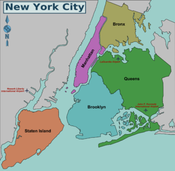
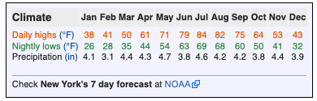
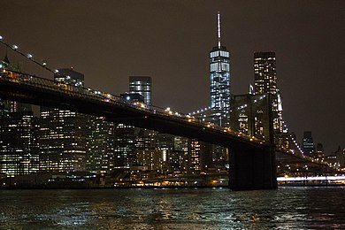
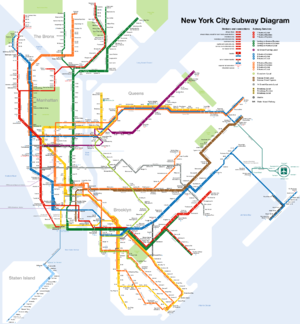

New York City consists of five boroughs, which are five separate counties. Each borough has a unique culture and could be a large city in its own right. Within each borough individual neighborhoods, some several square miles in size, and others only a few blocks in size, have personalities lauded in music and film. Where you live, work, and play in New York says something to New Yorkers about who you are.
The five New York boroughs are:
New York City District Map.png
Manhattan (New York County)
The famous island between the Hudson and East Rivers, with many diverse and unique neighborhoods. Manhattan is home to the Empire State Building in Midtown, Central Park, Times Square, Wall Street, Harlem, and the trendy neighborhoods of Greenwich Village and SoHo.
Brooklyn (Kings County)
The most populous borough, and formerly a separate city. Located south and east of Manhattan across the East River. Known for the Brooklyn Botanic Garden, Prospect Park, The Brooklyn Museum, The New York Aquarium and a key NYC landmark Coney Island.
Queens (Queens County)
Located to the east of Manhattan, across the East River, and north, east, and south of Brooklyn. With over 170 languages spoken, Queens is the most ethnically diverse region in the United States, and one of the most diverse in the world.
The Bronx (Bronx County)
Located north of Manhattan Island, the Bronx is home to the Bronx Zoo, the New York Botanical Gardens, and the New York Yankees professional baseball team.
Staten Island (Richmond County)
A large island in New York Harbor, south of Manhattan and just across the narrow Kill Van Kull from New Jersey. Unlike the rest of New York City, Staten Island has a suburban character. It is known as the borough of parks. It has its own baseball team, several malls, and a zoo.

The Climate
New York City has a humid subtropical climate, experiencing all four seasons and with about 50 inches (1,200mm) of rainfall evenly distributed throughout the year. Depending on the time of the year you visit it would be optimal to know what kind of weather you should expect.
Winter: Winters in NYC are chilly and damp. However due to the moderating effect of the ocean and the urban heat island, the city does have warmer temperatures when compared to other cities on the same latitude like Pittsburgh, Columbus or Indianapolis. Nighttime lows usually hover around freezing and daytime highs are usually between the low 40s and the mid 50s (5C-15C). How cold or how warm it gets though depends greatly upon the location you're at in the city: the northern and western parts of the metropolitan area (like The Bronx, Yonkers and Newark) are usually colder during the night while the southern - southeastern areas such as Staten Island and Long Island may have milder temperatures. Sometimes the mercury may dip down to the teens (around -10C) but prolonged cold periods are very rare. New York is the second snowiest city out of the big 5 in the northeast, being 17 inches behind Boston but 5 inches in front of Philadelphia. The first snowfall of the year usually happens around early or mid-December and the last one in late February or early March. The city is prone to big snowstorms that can produce up to 1-2 feet of snow. While such events can create a winter wonderland keep in mind that they can also cause big traffic bottlenecks especially on highways. How much snow falls depends on the location in the city as the afromentioned colder areas also tend to receive more snow than the afromentioned warmer areas (JFK airport receives 2 inches less snow than Central Park and 5 inches less snow than Newark on average). Nor-easters (storms with strong winds that produce mostly rain but also snow) do affect the city and represent a large chunk of the total precipitation in winter and spring.
Summer: Summertime is the time when most visitors arrive at NYC. The weather is generally mild with the ocean keeping the weather from being unbearably hot. Daytime highs are usually between the low 70s and the high 80s (20C-30C) and nighttime lows hover around 60F (16C). The city can experience heatwaves though that can make days particularly hot especially in places like Manhattan and inland areas like Newark, Patterson and the Yonkers which may become quite repulsive when the daytime high hits the 90s (30C and above). In stark contrast, coastal areas south of Long Island and Staten Island benefit significantly from the sea breeze that keeps temperatures much cooler even if Manhattan is sweltering. Prolonged hot periods are quite rare though. Rainfall is also a distinctive feature of the summer months as most of it falls between June and September and when it happens the weather may turn a bit chilly.
Spring - Autumn: Spring and Autumn are generally identican when it comes the climate and are generally considered some of the best times to visit the city with generally mild temperatures. Keep in mind however that the weather in March and November may be quite similar to that of winter and the city does usually see at least one light snowfall every year during those months. Nor-easters are also more prevelant during Spring than Autumn, while during Autumn the changed color of the leaves is in full sight, especially in large, green areas like Central Park.

New Yorkers
The diverse population runs the gamut from some of America's wealthiest celebrities and socialites to homeless people. There are millions of immigrants living in the city. New York's population has been diverse since the city's founding by the Dutch. Successive waves of immigration from virtually every nation in the world make New York a giant social experiment in cross-cultural harmony.
The city's ethnic heritage illuminates different neighborhoods throughout the five boroughs. Manhattan's Chinatown remains a vibrant center of New York City's Chinese community, though in recent years the very large Chinese community in Flushing, Queens, has rivaled if not eclipsed it in importance, and three other Chinatowns have formed in New York City: the Brooklyn Chinatown in Sunset Park; the Elmhurst Chinatown in Queens; and the Avenue U Chinatown located in the Homecrest section of Brooklyn. Traces of the Lower East Side's once-thriving Jewish community still exist amid the newly-gentrified neighborhood's trendy restaurants and bars, but there are Chassidic communities in Borough Park, Crown Heights and Williamsburg, Brooklyn. Harlem has been gentrifying and diversifying and remains a center of African-American culture in New York. East (Spanish) Harlem still justifies its reputation as a large Hispanic neighborhood. Little known to most tourists are the large Dominican neighborhoods of Hamilton Heights and Washington Heights in upper Manhattan. Brooklyn's Greenpoint is famous for its large and vibrant Polish community, and the Flatbush section - once home to the Brooklyn Dodgers - is today a huge and thriving Caribbean and West Indian section. Queens and Brooklyn are known for being home to many of New York's more recent immigrant groups, which since 1990 have included large numbers of Russians, Uzbeks, Nigerians, Chinese, Irish, Italian, French, Filipinos, Yugoslavians, Indians, Sri Lankans, Pakistanis, Bangladeshis, Japanese, Koreans, Thais, Kenyans, Arabs (from throughout the Middle East and northern Africa), Mexicans, Puerto Ricans, Cubans, Dominicans, Ecuadorians, Brazilians, Colombians and Jamaicans. New York City's Caucasian population who are native born New Yorkers are overwhelmingly descended from the previous centuries immigrants: Irish, Italian or Eastern European Jewish, a smaller percentage are Turks, Yugoslavs, Albanians. Each of these groups has brought their cuisines with them, making NYC a city where authentic bagels, Pizza and ethnic foods are available everywhere. An important change has been taking place in the population recently. During the last 2 decades and especially since 2003, large numbers of young people, many of them recent college graduates and professionals from the rest of the USA have moved to New York City, mostly to Brooklyn, Manhattan, and the parts of Queens closest to Manhattan. They have changed things considerably and continue to add to New York's vitality and artistic output. They have completely changed their neighborhoods in Brooklyn and Manhattan, such as Williamsburg, Brooklyn and Lower East side, Manhattan. One important thing to note about New York City, is its never-ending change, new stores, businesses, buildings and even skyscrapers replace the previous structures, there is always new construction. Photographs of the same busy street 10 or 20 years ago are unrecognizable today.

MTA System
Despite a (somewhat deserved) reputation for being dirty, the subway, which operates 24/7, is the fastest and best way to travel around the city. Fares are $2.75 (unless you use Single Ride MetroCard, which is $3.00), regardless of distance traveled. The much-feared subway crimes of the 1970s and 1980s are for the most part a thing of the past, and it is almost always completely safe. Just remember to use common sense when traveling late at night alone. Try to use heavily-traveled stations, remain visible to other people, and don't display items of value publicly. While violent crime is rare, petty crime - especially theft of iPhones and other expensive electronics - is more frequent, so be aware when using your phone on the train. Also, beware that hundreds of people have been arrested for putting their feet on a Subway seat or sitting improperly on a subway seat. Seven years ago, rule 1050(7)(J) of the city’s transit code criminalized what was once simply selfish behavior, such as standing too close to the doors. About 1,600 people were arrested in 2011 and had to wait long periods before seeing a judge and being sentenced.

Food Around the World
New York has, as you might expect of the Big Apple, all the eating options covered and you can find almost every type of food available and every cuisine of the world represented. There are tens of thousands of restaurants to suit all tastes and budgets, ranging from dingy $0.99-a-slice pizza joints to $500-a-plate prix fixe sushi and exclusive Michelin-starred eateries. Thousands of delis, bodegas, and grocery stores dot every corner of the city and DIY meals are easy and cheap to find. Street food comes in various tastes, ranging from the ubiquitous New York hot dog vendors to the many carts with Middle Eastern cuisine on street corners in mid-town. However in Midtown be wary of restaurants and bars both immediately on and around Times Square, within the Theater District or near the Empire State Building - many are tourist traps cashing in on travelers' gullibility and lack of local knowledge. New Yorkers wouldn't dream of eating out in such places; you shouldn't either! It pays to be adventurous therefore and reach out into the individual neighborhoods for a true authentic NYC dining experience. Even within Midtown, going a couple of blocks away in any direction from a major tourist street can make all the difference. Instead of eating on Times Square for example, venture two blocks to the west onto 9th Avenue to find a plethora of much more reasonably priced eating and drinking options.
One "must do" while in New York City is a slice of New York style pizza. Whether it's your first time to New York, or you are a seasoned New York visitor, getting a "slice of pie" is a tradition every visitor should make time for! But before you do, it might be fun to learn the history of New York pizza and why it's so famous.
Fruit stalls appear at many intersections from Spring to Fall with ready to eat strawberries, bananas, apples, etc available at very low cost. Vegetarians will find New York to be a paradise with hundreds of vegetarian-only restaurants and good veggie options in even the most expensive places.
Dangerous Part
New York is statistically the safest large city in the United States and miles away from its situation during the 1990s when it was considered the "murder capital of the United States". Its crime rate per person is lower than the national average and many small towns and there is high police presence almost everywhere in the city today. However there are some things to watch out for such as:
Law Enforcement in NYC- The New York Police Department has full police powers within the 5 boroughs. NYPD marked cruisers are white body with blue decals and lettering. New York Sheriff also have jurisdiction. The NYPD is the largest police force in America. The NYPD invested in sophisicated techonology and equipment to deter crime and terrorism. CCTV cameras are in use in several areas of the city and NYPD has special units in the city that is strategically placed to ensure that the city is safe. NYPD police vehicles have bulletproof shielding on their vehicles and bulletproof glass inserts on the driver and passenger side doors. New York State Police Troop NYC divison also assists local police and troop NYC division have jurisdiction in NYC. The port authority police department which is a bi-state agency between New York and New Jersey have police powers in both states. The Port Authority Police provides law enforcement services to all airports- John F Kennedy, La Guardia, Newark Liberty, Teteroboro and Stewart Airports. They also provide law enforcement services to all sea ports, bridges and tunnels in and out of city, Bus Terminals,Port Authority Trans Hudson and World Trade Center, however they can arrest and question anyone in NY and NJ.